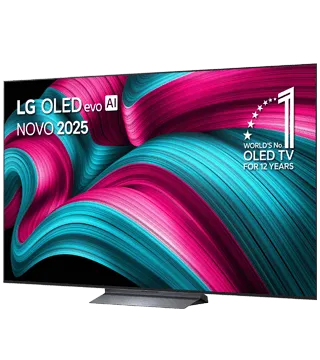

TV OLED LG 77C5
Description
Taille de l'écran : 195 cm (77")
Technologie : OLED, garantit aux images un contraste élevé, des couleurs réalistes et un noir profond
Résolution : 3840 x 2160 pixels conditionnent la qualité d'image. Plus il y a de pixels, plus l'image est riche
Définition : 4K, la définition est 4X supérieure à la norme HD et permet un niveau de détail élevé
Fréquence de balayage native : 120 Hz
Fréquence de balayage native (Fluidité de l'image) : 120Hz affichent 120 images par seconde, adapté aux événements sportifs, aux jeux vidéo et aux films d'action
Fréquence optimisée : jusqu'à 144 Hz , permet via un traitement d'amélioration d'afficher une fréquence plus élevée adapté aux jeux vidéo
Type de processeur : Alpha 9 AI Gen8
Dolby vision : oui, vous permettra d'obtenir des images très lumineuses, un contraste beaucoup plus élevé, et des couleurs plus riches
HDR : oui, permet d'augmenter le niveau de détail de l'image et son contraste,
| Desc | Image | Prix |
| TV OLED LG 77C5 2025 (195cm) |  | 3199.99 € |